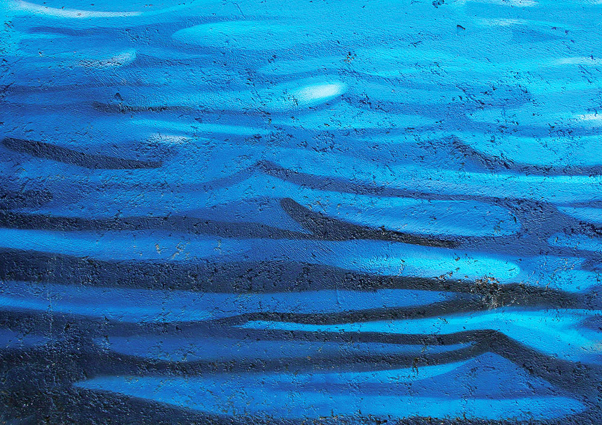
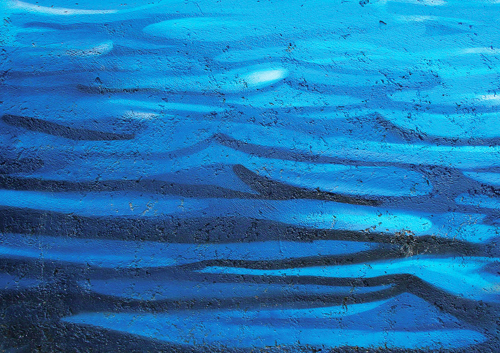

Dieci mari di Rimini
Editorial Design

Editorial Design
Dieci Mari di Rimini is an editorial project that reflects how people interprete the see in their mind. I took photos about murales and painting on the Rimini's beach and I translate them into posters.


 
